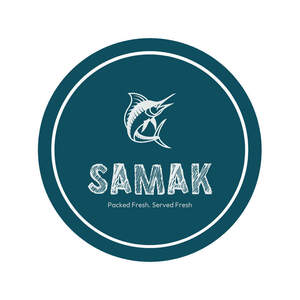

Trade Mark Journal No.2025/047 21 November 2025
UK00004293045 11 November 2025 (29)

- Class 29
- Fresh fish,frozen fish,fish products,fish cakes,fish finger,tin fishes; Fish; Tuna fish; Fish fillets; Fillets (Fish -); Steaks of fish; Fish steaks; Fish croquettes; Fish steak; Fish with chips; Quenelles [fish]; Fish sausages; Pickled fish; Cooked fish; Grilled fish fillets; Fish jellies; Tinned fish; Fish, tinned; Dishes of fish; Tuna fish [preserved]; Salted fish; Fish cakes; Smoked fish; Frozen fish; Canned fish; Fish, canned; Fish crackers; Fish, seafood and molluscs spreads; Dried fish; Fish maw; Fish meat floss; Fish sticks; Dried fish meat; Fish balls; Fish floss; Bottled fish; Mousses (Fish -); Fish mousses; Fish stock; Fish, seafood and molluscs, not live; Processed fish roe; Tuna fish [not live]; Tuna fish, not live; Fish roe, prepared; Fish paste; Processed fish; Fish fingers; Sea trout roe for food; Fish, preserved; Preserved fish; Artificial fish roes; Fish preserves; Fish extracts; Frozen cooked fish; Snakehead fish, not live; Fish spawn (Processed -); Processed fish spawn; Foods made from fish; Fish spread; Edible oils derived from fish [other than cod liver oil]; Fish products being frozen; Sea salmon roe for food; Foods prepared from fish; Flakes of dried fish meat (kezuri-bushi); Fish in olive oil; Prepared fish dishes; Fish eggs for human consumption; Tajine [prepared meat, fish or vegetable dish]; Smoked fish spread; Boiled and dried fish; Tagine [prepared meat, fish or vegetable dish]; Common plaice fish, not live; Bottled fish products; Fish meal for human consumption; Fish, not live; Crab meat; Food products made from fish; Fish (Food products made from -); Anchovy fillets; Seafood; Salmon croquettes.
Abdul Paruthikkunnan